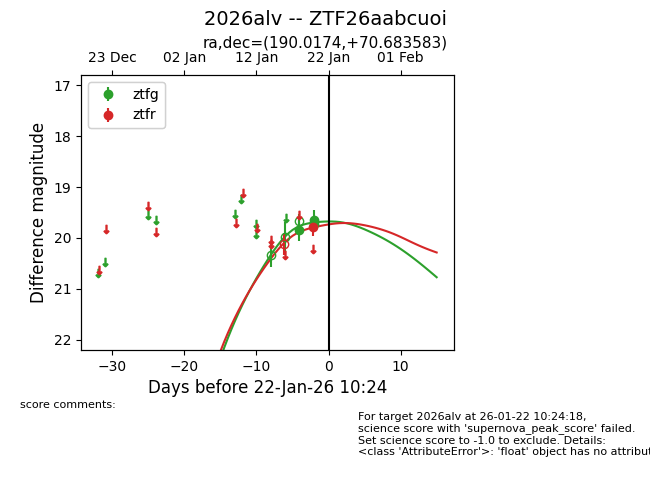
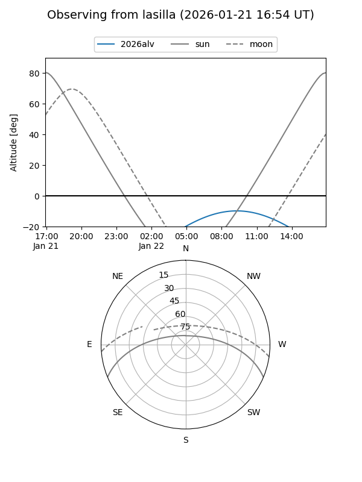
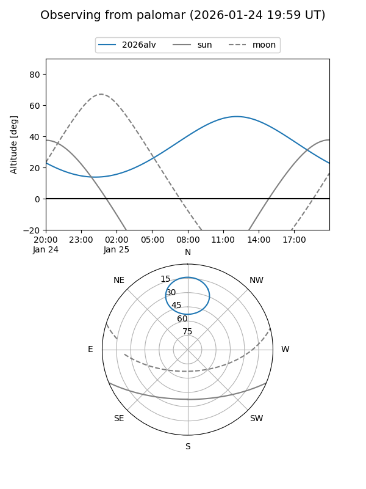
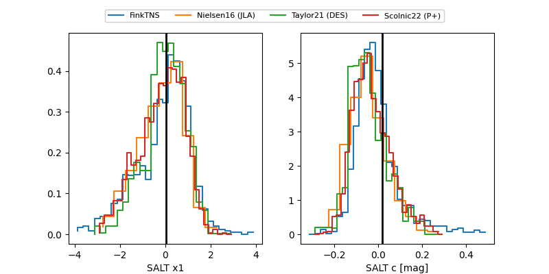

2026alv
Target 2026alv at 2026-01-25 10:06
Aliases and brokers:
FINK: link
Lasair: link
ALeRCE: link
TNS: link
YSE: link
alt names
ZTF26aabcuoi (ztf,fink_ztf)
2026alv (tns,yse)
Coordinates:
equatorial (ra, dec) = 190.0174,+70.68358
equatorial (HMS+DMS) = 12:40:04.16,+70:41:00.90
galactic (l, b) = (124.2951,+46.41457)
Flags:
Photometry:
last ztfg=19.68, ztfr=19.54
5 ztfg, 2 ztfr detections
Lightcurve

Visibility


Additional plots
